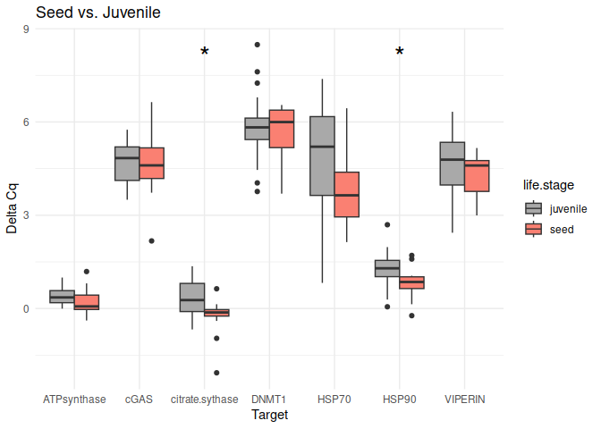
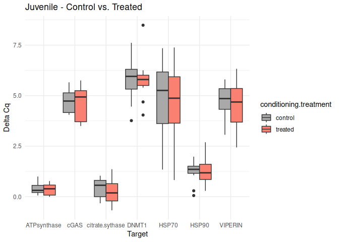
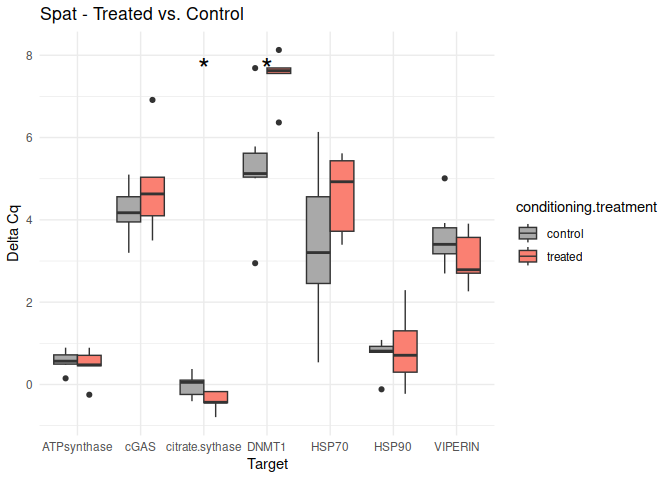

INTRO
This notebook performs pair-wise comparisons of qPCR gene expression, normalized to GAPDH expression. It calculates delta Cq, delta delta Cq, and fold changes in expression. Additionally, it generates box plots (delta Cq), and bar plots (fold change expression).
I’ve provided a summary of the various pair-wise comparisons immediately below, but you might want to just skip to the plots, as the summary and the notebook content is very lengthy.
SUMMARY
t-tests (Delta Cq)
Seed vs. Adult
These genes had p-values <= 0.05:
- VIPERIN
Seed vs. Juvenile
These genes had p-values <= 0.05:
citrate synthase
HSP90
Seed vs. Spat
These genes had p-values <= 0.05:
- VIPERIN
Adult vs. Juvenile
The genes had p-values <= 0.05:
citrate synthase
VIPERIN
Adult vs. Spat
No genes had p-values <= 0.05
Juvenile vs. Spat
The genes had p-values <= 0.05:
citrate synthase
VIPERIN
Seed - Conditioning Treated vs. Control
No genes had p-values <= 0.05
Adult - Conditioning Treated vs. Control
The genes had p-values <= 0.05:
- HSP90
Juvenile - Conditioning Treated vs. Control
No genes had p-values <= 0.05
Spat - Conditioning Treated vs. Control
The genes had p-values <= 0.05:
citrate synthase
DNMT1
Adult - Acute Ambient vs. High
No genes had p-values <= 0.05
Juvenile - Acute Ambient vs. High
No genes had p-values <= 0.05
Adult - Conditioning Treated: Acute Ambient vs. High
No genes had p-values <= 0.05
Adult - Conditioning Control: Acute Ambient vs. High
No genes had p-values <= 0.05
Juvenile - Conditioning Treated: Acute Ambient vs. High
The genes had p-values <= 0.05:
- HSP70
Juvenile - Conditioning Control: Acute Ambient vs. High
The genes had p-values <= 0.05:
- VIPERIN
Gene Expression (delta delta Cq or fold change)
Adult - Conditioning Treated: Acute High vs. Ambient
All genes show elevated expression relative to Ambient.
Fold change is at similar levels across all genes, with DNMT1 and HSP70 being the highest.
Juvenile - Conditioning Treated: Acute High vs. Ambient
All genes show elevated expression relative to Ambient.
HSP70 shows ~4-fold higher fold change in expression compared to most of the other genes.
DNMT1 exhibits fold change expression ~1/2 that of most of the other genes.
Adult - Adult vs. Seed
All genes show elevated expression relative to Seed.
VIPERIN exhibits fold change in expression >2-fold higher than the other genes.
Adult - Adult vs. Spat
All genes show elevated expression relative to Spat.
All genes have similar fold changes in expression, with ATP synthase and DNMT1 showing the highest levels of fold change in expression.
Adult - Spat vs. Seed
All genes show elevated expression relative to Seed.
Most genes have similar fold changes in expression.
VIPERIN exhibits fold change in a expression ~2-fold higher than the other genes.
Conditioning by Target and Lifestage
All genes show elevated expression relative to Control.
VIPERIN, citrate synthase, and ATP synthase show an initial increase in fold change expression from seed to spat life stages, declining to juvenile and adult lifestages.
HSP90 shows level fold changes in expression across seed, spat, and juvenile lifestages, followed by a decrease in the adult stage.
DNMT1 exhibits a drastic decrease in fold change expression from seed to spat, followed by a substantial increase from spat to adult.
cGAS and HSP70 exhibit decreases from seed to spat, followed by a sharp increase from spat to juvenile. This is followed by a moderate decrease from juvenile to adult by cGAS and a sharp decrease in HSP70.
The post below is markdown generated from 01.01-qPCR.Rmd (commit 9a32e40).
1 Description
This notebook performs pair-wise comparisons of qPCR gene expression, normalized to GAPDH expression. It calculates delta Cq, delta delta Cq, and fold changes in expression. Additionally, it generates box plots (delta Cq), and bar plots (fold change expression).
2 Set variables
2.1 Set sample groups
Groups are named in the following fashion:
<life.stage>.<conditioning.treatment>.<acute.treatment>
This allows for parsing downstream.
Below is the full set of groups for the entire experiment. For the current qPCR analysis, seed and spat do not have acute treatments; just conditioning treatments.
seed.control.ambient=c("29", "40", "55", "63", "69", "101", "119", "122", "155", "164", "187", "202", "209", "214", "233", "236", "275")
seed.control.high=c("42", "59", "60", "62", "86", "102", "140", "176", "177", "184", "192", "223", "234", "243", "244", "254", "264")
seed.treated.ambient=c("14", "48", "66", "72", "89", "115", "129", "138", "156", "182", "191", "201", "227", "239", "270", "277", "280")
seed.treated.high=c("15", "19", "24", "88", "92", "105", "111", "113", "120", "128", "161", "200", "211", "256", "257", "266", "285")
spat.control.ambient=c("11", "30", "36", "52", "77", "114", "134", "142", "144", "183", "193", "229", "230", "231", "240", "272", "287")
spat.control.high=c("27", "74", "93", "96", "97", "137", "143", "153", "168", "178", "189", "206", "262", "274", "282", "284", "289")
spat.treated.ambient=c("9", "13", "38", "46", "47", "121", "145", "151", "174", "194", "197", "198", "216", "235", "241", "252", "291")
spat.treated.high=c("6", "25", "50", "78", "124", "126", "131", "160", "163", "172", "220", "226", "242", "253", "296", "298")
juvenile.control.ambient=c("18", "57", "65", "75", "79", "104", "110", "123", "125", "171", "175", "205", "238", "273", "279", "293", "317")
juvenile.control.high=c("12", "39", "43", "49", "71", "130", "141", "146", "150", "170", "195", "297", "301", "324", "351", "355", "371")
juvenile.treated.ambient=c("1", "34", "64", "83", "98", "147", "152", "158", "162", "169", "188", "271", "295", "310", "357", "361", "381")
juvenile.treated.high=c("28", "53", "61", "73", "81", "106", "109", "139", "149", "173", "181", "213", "290", "302", "311", "364", "392")
adult.control.ambient=c("3", "5", "13*", "16", "17", "80", "87", "94", "148", "159", "179", "180", "250", "258", "268", "312", "326", "330", "334", "346", "360", "377", "379", "386")
adult.control.high=c("20", "23", "26", "32", "33", "67", "70", "90", "107", "132", "135", "157", "166", "186", "207", "215", "248", "316", "341", "344", "349", "382", "394", "395")
adult.treated.ambient=c("7", "31", "35", "37", "41", "54", "84", "100", "112", "116", "118", "133", "154", "199", "203", "204", "208", "219", "294", "318", "339", "353", "363", "378")
adult.treated.high=c("21", "22", "45", "82", "85", "91", "95", "99", "103", "108", "117", "127", "165", "185", "190", "196", "232", "237", "245", "263", "276", "306", "343", "374")2.2 Assign groups to list
# Combine vectors into lists
# Used for adding treatment info and/or subsetting downstream
groups_list <- list(juvenile.control.ambient = juvenile.control.ambient,
juvenile.control.high = juvenile.control.high,
juvenile.treated.ambient = juvenile.treated.ambient,
juvenile.treated.high = juvenile.treated.high,
adult.control.ambient = adult.control.ambient,
adult.control.high = adult.control.high,
adult.treated.ambient = adult.treated.ambient,
adult.treated.high = adult.treated.high,
seed.control.ambient = seed.control.ambient,
seed.control.high = seed.control.high,
seed.treated.ambient = seed.treated.ambient,
seed.treated.high = seed.treated.high,
spat.control.ambient = spat.control.ambient,
spat.control.high = spat.control.high,
spat.treated.ambient = spat.treated.ambient,
spat.treated.high = spat.treated.high)3 Functions
3.1 Calculate delta Cq
Normalized to designated normalizing gene
calculate_delta_Cq <- function(df) {
df <- df %>%
group_by(Sample) %>%
mutate(delta_Cq = Cq.Mean - Cq.Mean[Target == "GAPDH"]) %>%
ungroup()
return(df)
}3.2 Create delta Cq boxplots
3.2.1 Lifestage comparison
# Function to create box plots for each comparison
create_boxplot_delta_Cq <- function(data, comparison, t_test_results) {
# Extract life stages from comparison
life_stages <- unlist(strsplit(comparison, "\\."))
# Debugging: Print life stages
# print(paste("Life stages for comparison:", comparison))
# print(life_stages)
# Filter data for the relevant life stages
filtered_data <- data %>%
filter(life.stage %in% life_stages)
# Debugging: Print filtered data
# print("Filtered data:")
# print(filtered_data)
# Check if both life stages are included
if (!all(life_stages %in% unique(filtered_data$life.stage))) {
stop("Not all life stages are included in the filtered data")
}
y_limits <- range(filtered_data$delta_Cq, na.rm = TRUE)
# Debugging: Print y_limits
# print("Y limits:")
# print(y_limits)
# Filter t_test_results for the current comparison
t_test_results_filtered <- t_test_results %>%
filter(comparison == !!comparison)
# Debugging: Print filtered t_test_results
# print("Filtered t_test_results:")
# print(t_test_results_filtered)
# Filter t_test_results for asterisks
t_test_results_with_asterisks <- t_test_results_filtered %>%
filter(asterisk != "")
# Debugging: Print t_test_results_with_asterisks
# print("t_test_results_with_asterisks:")
# print(t_test_results_with_asterisks)
formatted_title <- paste0(toupper(substring(life_stages[1], 1, 1)), substring(life_stages[1], 2),
" vs. ",
toupper(substring(life_stages[2], 1, 1)), substring(life_stages[2], 2))
boxplot <- ggplot(filtered_data, aes(x = Target, y = delta_Cq, fill = life.stage)) +
geom_boxplot(position = position_dodge(width = 0.75)) +
theme_minimal() +
theme(legend.position = "right") +
scale_fill_manual(values=c("darkgray", "salmon", "lightblue", "lightgreen")) +
ylim(y_limits) +
labs(x = "Target", y = "Delta Cq", title = formatted_title) +
# Highlighted section: Adds asterisks
geom_text(data = t_test_results_with_asterisks,
aes(x = Target, y = y_limits[2] - 1, label = asterisk),
vjust = -0.5, size = 8, color = "black", inherit.aes = FALSE)
print(boxplot)
}3.2.2 Conditioning comparisons
- Extract Life Stage and Conditioning Treatments:
- The comparison string is split into its components (
life_stage,treatment1, andtreatment2).
- Filter Data:
- The filtered_data data frame is filtered to include only the rows with the relevant life stage and conditioning treatments.
- Check for Both Treatments:
- Ensure that both treatments are included in the
filtered_data.
- Filter T-Test Results:
The
t_test_results_filtereddata frame is filtered for the specific comparison.The
t_test_results_with_asterisksdata frame is created to include only the rows with asterisks.
- Format the Title:
The
formatted_titlevariable is created by capitalizing the first letter of each component and concatenating them with ” - ” and ” vs. ” in between.This should create box plots comparing conditioning treatments within each life stage, with titles formatted as
<life.stage> - Treated vs. Control.
# Function to create box plots for each comparison of conditioning treatments within life stages
create_boxplot_conditioning <- function(data, comparison, t_test_results) {
# Extract life stage and conditioning treatments from comparison
comparison_parts <- unlist(strsplit(comparison, "\\."))
life_stage <- comparison_parts[1]
treatment1 <- comparison_parts[2]
treatment2 <- comparison_parts[3]
# Debugging: Print life stage and treatments
# print(paste("Life stage and treatments for comparison:", comparison))
# print(c(life_stage, treatment1, treatment2))
# Filter data for the relevant life stage and conditioning treatments
filtered_data <- data %>%
filter(life.stage == life_stage, conditioning.treatment %in% c(treatment1, treatment2))
# Debugging: Print filtered data
# print("Filtered data:")
# print(filtered_data)
# Check if both treatments are included
if (!all(c(treatment1, treatment2) %in% unique(filtered_data$conditioning.treatment))) {
stop("Not all treatments are included in the filtered data")
}
y_limits <- range(filtered_data$delta_Cq, na.rm = TRUE)
# Debugging: Print y_limits
# print("Y limits:")
# print(y_limits)
# Filter t_test_results for the current comparison
t_test_results_filtered <- t_test_results %>%
filter(comparison == !!comparison)
# Debugging: Print filtered t_test_results
# print("Filtered t_test_results:")
# print(t_test_results_filtered)
# Filter t_test_results for asterisks
t_test_results_with_asterisks <- t_test_results_filtered %>%
filter(asterisk != "")
# Debugging: Print t_test_results_with_asterisks
# print("t_test_results_with_asterisks:")
# print(t_test_results_with_asterisks)
# Format the title
formatted_title <- paste0(toupper(substring(life_stage, 1, 1)), substring(life_stage, 2),
" - ",
toupper(substring(treatment1, 1, 1)), substring(treatment1, 2),
" vs. ",
toupper(substring(treatment2, 1, 1)), substring(treatment2, 2))
boxplot <- ggplot(filtered_data, aes(x = Target, y = delta_Cq, fill = conditioning.treatment)) +
geom_boxplot(position = position_dodge(width = 0.75)) +
theme_minimal() +
theme(legend.position = "right") +
scale_fill_manual(values=c("darkgray", "salmon")) +
ylim(y_limits) +
labs(x = "Target", y = "Delta Cq", title = formatted_title) +
# Highlighted section: Adds asterisks
geom_text(data = t_test_results_with_asterisks,
aes(x = Target, y = y_limits[2] - 1, label = asterisk),
vjust = -0.5, size = 8, color = "black", inherit.aes = FALSE)
print(boxplot)
}3.2.3 Acute comparisons
- Extract Life Stage and Acute Treatments:
- The comparison string is split into its components (
life_stage,treatment1, andtreatment2).
- Filter Data:
- The
filtered_datadata frame is filtered to include only the rows with the relevant life stage and acute treatments.
- Check for Both Treatments:
- Ensure that both treatments are included in the
filtered_data.
- Filter T-Test Results:
The
t_test_results_filtereddata frame is filtered for the specific comparison.The
t_test_results_with_asterisksdata frame is created to include only the rows with asterisks. Format the Title:
- The formatted_title variable is created by capitalizing the first letter of each component and concatenating them with ” - ” and ” vs. ” in between.
- This should create box plots comparing acute treatments within each life stage, with titles formatted as
<life.stage> - Ambient vs. High.
# Function to create box plots for each comparison of acute treatments within life stages
create_boxplot_acute <- function(data, comparison, t_test_results) {
# Extract life stage and acute treatments from comparison
comparison_parts <- unlist(strsplit(comparison, "\\."))
life_stage <- comparison_parts[1]
treatment1 <- comparison_parts[2]
treatment2 <- comparison_parts[3]
# Debugging: Print life stage and treatments
# print(paste("Life stage and treatments for comparison:", comparison))
# print(c(life_stage, treatment1, treatment2))
# Filter data for the relevant life stage and acute treatments
filtered_data <- data %>%
filter(life.stage == life_stage, acute.treatment %in% c(treatment1, treatment2))
# Debugging: Print filtered data
# print("Filtered data:")
# print(filtered_data)
# Check if both treatments are included
if (!all(c(treatment1, treatment2) %in% unique(filtered_data$acute.treatment))) {
stop("Not all treatments are included in the filtered data")
}
y_limits <- range(filtered_data$delta_Cq, na.rm = TRUE)
# Debugging: Print y_limits
# print("Y limits:")
# print(y_limits)
# Filter t_test_results for the current comparison
t_test_results_filtered <- t_test_results %>%
filter(comparison == !!comparison)
# Debugging: Print filtered t_test_results
# print("Filtered t_test_results:")
# print(t_test_results_filtered)
# Filter t_test_results for asterisks
t_test_results_with_asterisks <- t_test_results_filtered %>%
filter(asterisk != "")
# Debugging: Print t_test_results_with_asterisks
# print("t_test_results_with_asterisks:")
# print(t_test_results_with_asterisks)
# Format the title
formatted_title <- paste0(toupper(substring(life_stage, 1, 1)), substring(life_stage, 2),
" - ",
toupper(substring(treatment1, 1, 1)), substring(treatment1, 2),
" vs. ",
toupper(substring(treatment2, 1, 1)), substring(treatment2, 2))
boxplot <- ggplot(filtered_data, aes(x = Target, y = delta_Cq, fill = acute.treatment)) +
geom_boxplot(position = position_dodge(width = 0.75)) +
theme_minimal() +
theme(legend.position = "right") +
scale_fill_manual(values=c("darkgray", "salmon")) +
ylim(y_limits) +
labs(x = "Target", y = "Delta Cq", title = formatted_title) +
# Highlighted section: Adds asterisks
geom_text(data = t_test_results_with_asterisks,
aes(x = Target, y = y_limits[2] - 1, label = asterisk),
vjust = -0.5, size = 8, color = "magenta", inherit.aes = FALSE)
print(boxplot)
}3.2.4 Acute treatements within life stage conditioning
# Function to create box plots for each comparison of acute treatments within life stages and conditioning treatments
create_boxplot_acute_conditioning <- function(data, comparison, t_test_results) {
# Extract life stage, conditioning treatment, and acute treatments from comparison
comparison_parts <- unlist(strsplit(comparison, "\\."))
life_stage <- comparison_parts[1]
conditioning_treatment <- comparison_parts[2]
treatment1 <- comparison_parts[3]
treatment2 <- comparison_parts[5]
# Filter data for the relevant life stage, conditioning treatment, and acute treatments
filtered_data <- data %>%
filter(life.stage == life_stage, conditioning.treatment == conditioning_treatment, acute.treatment %in% c(treatment1, treatment2))
# Check if both treatments are included
if (!all(c(treatment1, treatment2) %in% unique(filtered_data$acute.treatment))) {
stop("Not all treatments are included in the filtered data")
}
y_limits <- range(filtered_data$delta_Cq, na.rm = TRUE)
# Filter t_test_results for the current comparison
t_test_results_filtered <- t_test_results %>%
filter(comparison == !!comparison)
# Filter t_test_results for asterisks
t_test_results_with_asterisks <- t_test_results_filtered %>%
filter(asterisk != "")
# Format the title
formatted_title <- paste0(toupper(substring(life_stage, 1, 1)), substring(life_stage, 2),
" - ",
toupper(substring(conditioning_treatment, 1, 1)), substring(conditioning_treatment, 2),
" - ",
toupper(substring(treatment1, 1, 1)), substring(treatment1, 2),
" vs. ",
toupper(substring(treatment2, 1, 1)), substring(treatment2, 2))
boxplot <- ggplot(filtered_data, aes(x = Target, y = delta_Cq, fill = acute.treatment)) +
geom_boxplot(position = position_dodge(width = 0.75)) +
theme_minimal() +
theme(legend.position = "right") +
scale_fill_manual(values=c("darkgray", "salmon")) +
ylim(y_limits) +
labs(x = "Target", y = "Delta Cq", title = formatted_title) +
# Adds asterisks
geom_text(data = t_test_results_with_asterisks,
aes(x = Target, y = y_limits[2] - 1, label = asterisk),
vjust = -0.5, size = 8, color = "black", inherit.aes = FALSE)
print(boxplot)
}4 Read in files
# Get a list of all CSV files in the directory with the naming structure "*Cq-Results.csv"
cq_file_list <- list() # Initialize list
cq_file_list <- list.files(path = cqs_directory, pattern = "Cq-Results\\.csv$", full.names = TRUE)
# Initialize an empty list to store the data frames
data_frames_list <- list()
# Loop through each file and read it into a data frame, then add it to the list
for (file in cq_file_list) {
data <- read.csv(file, header = TRUE)
data$Sample <- as.character(data$Sample) # Convert Sample column to character type
data_frames_list[[file]] <- data
}
# Combine all data frames into a single data frame
combined_df <- bind_rows(data_frames_list, .id = "data_frame_id")
str(combined_df)'data.frame': 1920 obs. of 17 variables:
$ data_frame_id : chr "../data/qPCR/Cq/sam_2024-12-10_11-47-51_CFX96_GAPDH-02-Quantification-Cq-Results.csv" "../data/qPCR/Cq/sam_2024-12-10_11-47-51_CFX96_GAPDH-02-Quantification-Cq-Results.csv" "../data/qPCR/Cq/sam_2024-12-10_11-47-51_CFX96_GAPDH-02-Quantification-Cq-Results.csv" "../data/qPCR/Cq/sam_2024-12-10_11-47-51_CFX96_GAPDH-02-Quantification-Cq-Results.csv" ...
$ X : logi NA NA NA NA NA NA ...
$ Well : chr "A01" "A02" "A03" "A04" ...
$ Fluor : chr "SYBR" "SYBR" "SYBR" "SYBR" ...
$ Target : chr "Cg_GAPDH_205_F-355_R (SR IDs: 1172/3)" "Cg_GAPDH_205_F-355_R (SR IDs: 1172/3)" "Cg_GAPDH_205_F-355_R (SR IDs: 1172/3)" "Cg_GAPDH_205_F-355_R (SR IDs: 1172/3)" ...
$ Content : chr "Unkn-01" "Unkn-01" "Unkn-01" "Unkn-02" ...
$ Sample : chr "270" "270" "270" "271" ...
$ Biological.Set.Name : logi NA NA NA NA NA NA ...
$ Cq : num 24.8 24.8 25 24.4 24.3 ...
$ Cq.Mean : num 24.9 24.9 24.9 24.4 24.4 ...
$ Cq.Std..Dev : num 0.1005 0.1005 0.1005 0.0914 0.0914 ...
$ Starting.Quantity..SQ.: num NaN NaN NaN NaN NaN NaN NaN NaN NaN NaN ...
$ Log.Starting.Quantity : num NaN NaN NaN NaN NaN NaN NaN NaN NaN NaN ...
$ SQ.Mean : num NaN NaN NaN NaN NaN NaN NaN NaN NaN NaN ...
$ SQ.Std..Dev : num NaN NaN NaN NaN NaN NaN NaN NaN NaN NaN ...
$ Set.Point : int 60 60 60 60 60 60 60 60 60 60 ...
$ Well.Note : logi NA NA NA NA NA NA ...5 Clean data
5.1 Replace target names
# Remove rows with Sample name "NTC"
combined_df <- combined_df[combined_df$Sample != "NTC", ]
# Replace values in the Target column
combined_df$Target <- gsub("Cg_GAPDH_205_F-355_R \\(SR IDs: 1172/3\\)", "GAPDH", combined_df$Target)
combined_df$Target <- gsub("Cg_ATPsynthase_F/R \\(SR IDs: 1385/6\\)", "ATPsynthase", combined_df$Target)
combined_df$Target <- gsub("Cg_cGAS \\(SR IDs: 1826/7\\)", "cGAS", combined_df$Target)
combined_df$Target <- gsub("Cg_citrate_synthase \\(SR IDs: 1383/4\\)", "citrate.sythase", combined_df$Target)
combined_df$Target <- gsub("Cg_DNMT1_F \\(SR IDs: 1510/1\\)", "DNMT1", combined_df$Target)
combined_df$Target <- gsub("Cg_HSP70_F/R \\(SR IDs: 598/9\\)", "HSP70", combined_df$Target)
combined_df$Target <- gsub("Cg_Hsp90_F/R \\(SR IDs: 1532/3\\)", "HSP90", combined_df$Target)
combined_df$Target <- gsub("Cg_VIPERIN_F/R \\(SR IDs: 1828/9\\)", "VIPERIN", combined_df$Target)
str(combined_df)'data.frame': 1908 obs. of 17 variables:
$ data_frame_id : chr "../data/qPCR/Cq/sam_2024-12-10_11-47-51_CFX96_GAPDH-02-Quantification-Cq-Results.csv" "../data/qPCR/Cq/sam_2024-12-10_11-47-51_CFX96_GAPDH-02-Quantification-Cq-Results.csv" "../data/qPCR/Cq/sam_2024-12-10_11-47-51_CFX96_GAPDH-02-Quantification-Cq-Results.csv" "../data/qPCR/Cq/sam_2024-12-10_11-47-51_CFX96_GAPDH-02-Quantification-Cq-Results.csv" ...
$ X : logi NA NA NA NA NA NA ...
$ Well : chr "A01" "A02" "A03" "A04" ...
$ Fluor : chr "SYBR" "SYBR" "SYBR" "SYBR" ...
$ Target : chr "GAPDH" "GAPDH" "GAPDH" "GAPDH" ...
$ Content : chr "Unkn-01" "Unkn-01" "Unkn-01" "Unkn-02" ...
$ Sample : chr "270" "270" "270" "271" ...
$ Biological.Set.Name : logi NA NA NA NA NA NA ...
$ Cq : num 24.8 24.8 25 24.4 24.3 ...
$ Cq.Mean : num 24.9 24.9 24.9 24.4 24.4 ...
$ Cq.Std..Dev : num 0.1005 0.1005 0.1005 0.0914 0.0914 ...
$ Starting.Quantity..SQ.: num NaN NaN NaN NaN NaN NaN NaN NaN NaN NaN ...
$ Log.Starting.Quantity : num NaN NaN NaN NaN NaN NaN NaN NaN NaN NaN ...
$ SQ.Mean : num NaN NaN NaN NaN NaN NaN NaN NaN NaN NaN ...
$ SQ.Std..Dev : num NaN NaN NaN NaN NaN NaN NaN NaN NaN NaN ...
$ Set.Point : int 60 60 60 60 60 60 60 60 60 60 ...
$ Well.Note : logi NA NA NA NA NA NA ...5.2 Identify Samples with Cq.Std..Dev > 0.5
# Filter out rows where Cq.Std..Dev is NA
combined_df <- combined_df[!is.na(combined_df$Cq.Std..Dev), ]
# Filter rows where Cq.Std..Dev is greater than 0.5
high_cq_std_dev <- combined_df[combined_df$Cq.Std..Dev > 0.5, ]
# Print the filtered rows with specified columns, without row names
print(high_cq_std_dev[, c("Target", "Sample", "Cq", "Cq.Std..Dev")], row.names = FALSE) Target Sample Cq Cq.Std..Dev
GAPDH 316 23.94926 8.5684728
GAPDH 316 24.14183 8.5684728
GAPDH 316 38.88564 8.5684728
GAPDH 213 26.98012 2.2910353
GAPDH 213 23.00009 2.2910353
GAPDH 213 26.95634 2.2910353
GAPDH 263 22.42154 0.8731474
GAPDH 263 23.77008 0.8731474
GAPDH 263 24.05667 0.8731474
citrate.sythase 230 24.44066 4.4783429
citrate.sythase 230 24.40421 4.4783429
citrate.sythase 230 32.17909 4.4783429
VIPERIN 227 30.47773 3.5152533
VIPERIN 227 30.37738 3.5152533
VIPERIN 227 36.51553 3.5152533
VIPERIN 245 26.05748 5.1635899
VIPERIN 245 34.98192 5.1635899
VIPERIN 245 26.01928 5.1635899
VIPERIN 341 26.48675 2.9838590
VIPERIN 341 31.67235 2.9838590
VIPERIN 341 26.52174 2.9838590
VIPERIN 344 29.98184 2.3712440
VIPERIN 344 25.90358 2.3712440
VIPERIN 344 25.84648 2.3712440
VIPERIN 355 28.79712 0.5821437
VIPERIN 355 29.57428 0.5821437
VIPERIN 355 28.43490 0.58214375.3 Remove bad technical reps
# Group by Sample and Target, then filter out the outlier replicate
combined.fitered_df<- combined_df %>%
group_by(Sample, Target) %>%
filter(abs(Cq - mean(Cq, na.rm = TRUE)) <= Cq.Std..Dev)
# Print the filtered data frame
str(combined.fitered_df)gropd_df [1,264 × 17] (S3: grouped_df/tbl_df/tbl/data.frame)
$ data_frame_id : chr [1:1264] "../data/qPCR/Cq/sam_2024-12-10_11-47-51_CFX96_GAPDH-02-Quantification-Cq-Results.csv" "../data/qPCR/Cq/sam_2024-12-10_11-47-51_CFX96_GAPDH-02-Quantification-Cq-Results.csv" "../data/qPCR/Cq/sam_2024-12-10_11-47-51_CFX96_GAPDH-02-Quantification-Cq-Results.csv" "../data/qPCR/Cq/sam_2024-12-10_11-47-51_CFX96_GAPDH-02-Quantification-Cq-Results.csv" ...
$ X : logi [1:1264] NA NA NA NA NA NA ...
$ Well : chr [1:1264] "A01" "A02" "A04" "A06" ...
$ Fluor : chr [1:1264] "SYBR" "SYBR" "SYBR" "SYBR" ...
$ Target : chr [1:1264] "GAPDH" "GAPDH" "GAPDH" "GAPDH" ...
$ Content : chr [1:1264] "Unkn-01" "Unkn-01" "Unkn-02" "Unkn-02" ...
$ Sample : chr [1:1264] "270" "270" "271" "271" ...
$ Biological.Set.Name : logi [1:1264] NA NA NA NA NA NA ...
$ Cq : num [1:1264] 24.8 24.8 24.4 24.4 24.2 ...
$ Cq.Mean : num [1:1264] 24.9 24.9 24.4 24.4 23.9 ...
$ Cq.Std..Dev : num [1:1264] 0.1005 0.1005 0.0914 0.0914 0.2866 ...
$ Starting.Quantity..SQ.: num [1:1264] NaN NaN NaN NaN NaN NaN NaN NaN NaN NaN ...
$ Log.Starting.Quantity : num [1:1264] NaN NaN NaN NaN NaN NaN NaN NaN NaN NaN ...
$ SQ.Mean : num [1:1264] NaN NaN NaN NaN NaN NaN NaN NaN NaN NaN ...
$ SQ.Std..Dev : num [1:1264] NaN NaN NaN NaN NaN NaN NaN NaN NaN NaN ...
$ Set.Point : int [1:1264] 60 60 60 60 60 60 60 60 60 60 ...
$ Well.Note : logi [1:1264] NA NA NA NA NA NA ...
- attr(*, "groups")= tibble [632 × 3] (S3: tbl_df/tbl/data.frame)
..$ Sample: chr [1:632] "201" "201" "201" "201" ...
..$ Target: chr [1:632] "ATPsynthase" "DNMT1" "GAPDH" "HSP70" ...
..$ .rows : list<int> [1:632]
.. ..$ : int [1:2] 65 66
.. ..$ : int [1:2] 633 634
.. ..$ : int [1:2] 381 382
.. ..$ : int [1:2] 791 792
.. ..$ : int [1:2] 949 950
.. ..$ : int [1:2] 1107 1108
.. ..$ : int [1:2] 223 224
.. ..$ : int [1:2] 475 476
.. ..$ : int [1:2] 67 68
.. ..$ : int [1:2] 635 636
.. ..$ : int [1:2] 383 384
.. ..$ : int [1:2] 793 794
.. ..$ : int [1:2] 951 952
.. ..$ : int [1:2] 1109 1110
.. ..$ : int [1:2] 225 226
.. ..$ : int [1:2] 477 478
.. ..$ : int [1:2] 69 70
.. ..$ : int [1:2] 637 638
.. ..$ : int [1:2] 385 386
.. ..$ : int [1:2] 795 796
.. ..$ : int [1:2] 953 954
.. ..$ : int [1:2] 1111 1112
.. ..$ : int [1:2] 227 228
.. ..$ : int [1:2] 479 480
.. ..$ : int [1:2] 71 72
.. ..$ : int [1:2] 639 640
.. ..$ : int [1:2] 387 388
.. ..$ : int [1:2] 797 798
.. ..$ : int [1:2] 955 956
.. ..$ : int [1:2] 1113 1114
.. ..$ : int [1:2] 229 230
.. ..$ : int [1:2] 481 482
.. ..$ : int [1:2] 73 74
.. ..$ : int [1:2] 641 642
.. ..$ : int [1:2] 389 390
.. ..$ : int [1:2] 799 800
.. ..$ : int [1:2] 957 958
.. ..$ : int [1:2] 1115 1116
.. ..$ : int [1:2] 231 232
.. ..$ : int [1:2] 483 484
.. ..$ : int [1:2] 75 76
.. ..$ : int [1:2] 643 644
.. ..$ : int [1:2] 391 392
.. ..$ : int [1:2] 801 802
.. ..$ : int [1:2] 959 960
.. ..$ : int [1:2] 1117 1118
.. ..$ : int [1:2] 233 234
.. ..$ : int [1:2] 485 486
.. ..$ : int [1:2] 77 78
.. ..$ : int [1:2] 645 646
.. ..$ : int [1:2] 393 394
.. ..$ : int [1:2] 803 804
.. ..$ : int [1:2] 961 962
.. ..$ : int [1:2] 1119 1120
.. ..$ : int [1:2] 235 236
.. ..$ : int [1:2] 487 488
.. ..$ : int [1:2] 79 80
.. ..$ : int [1:2] 647 648
.. ..$ : int [1:2] 395 396
.. ..$ : int [1:2] 805 806
.. ..$ : int [1:2] 963 964
.. ..$ : int [1:2] 1121 1122
.. ..$ : int [1:2] 237 238
.. ..$ : int [1:2] 489 490
.. ..$ : int [1:2] 81 82
.. ..$ : int [1:2] 649 650
.. ..$ : int [1:2] 397 398
.. ..$ : int [1:2] 807 808
.. ..$ : int [1:2] 965 966
.. ..$ : int [1:2] 1123 1124
.. ..$ : int [1:2] 239 240
.. ..$ : int [1:2] 491 492
.. ..$ : int [1:2] 83 84
.. ..$ : int [1:2] 651 652
.. ..$ : int [1:2] 399 400
.. ..$ : int [1:2] 809 810
.. ..$ : int [1:2] 967 968
.. ..$ : int [1:2] 1125 1126
.. ..$ : int [1:2] 241 242
.. ..$ : int [1:2] 493 494
.. ..$ : int [1:2] 85 86
.. ..$ : int [1:2] 653 654
.. ..$ : int [1:2] 401 402
.. ..$ : int [1:2] 811 812
.. ..$ : int [1:2] 969 970
.. ..$ : int [1:2] 1127 1128
.. ..$ : int [1:2] 243 244
.. ..$ : int [1:2] 495 496
.. ..$ : int [1:2] 87 88
.. ..$ : int [1:2] 655 656
.. ..$ : int [1:2] 403 404
.. ..$ : int [1:2] 813 814
.. ..$ : int [1:2] 971 972
.. ..$ : int [1:2] 1129 1130
.. ..$ : int [1:2] 245 246
.. ..$ : int [1:2] 497 498
.. ..$ : int [1:2] 89 90
.. ..$ : int [1:2] 657 658
.. ..$ : int [1:2] 405 406
.. .. [list output truncated]
.. ..@ ptype: int(0)
..- attr(*, ".drop")= logi TRUE6 Group samples by target
# Group by Sample and Target, then summarize to get unique rows for each sample
grouped_df <- combined.fitered_df%>%
group_by(Sample, Target) %>%
summarize(Cq.Mean = mean(Cq, na.rm = TRUE)) %>%
ungroup()
str(grouped_df)tibble [632 × 3] (S3: tbl_df/tbl/data.frame)
$ Sample : chr [1:632] "201" "201" "201" "201" ...
$ Target : chr [1:632] "ATPsynthase" "DNMT1" "GAPDH" "HSP70" ...
$ Cq.Mean: num [1:632] 24 28.7 23.8 29.3 25.5 ...7 Add life stage and treatment cols
# Initialize new columns
grouped_df <- grouped_df %>%
mutate(life.stage = NA_character_,
conditioning.treatment = NA_character_,
acute.treatment = NA_character_)
# Loop through each vector
for (vec_name in names(groups_list)) {
vec <- groups_list[[vec_name]]
stage <- strsplit(vec_name, "\\.")[[1]][1]
conditioning_treatment <- strsplit(vec_name, "\\.")[[1]][2]
acute_treatment <- strsplit(vec_name, "\\.")[[1]][3]
# Loop through each row in grouped_df
for (i in 1:nrow(grouped_df)) {
sample <- grouped_df$Sample[i]
# Check if sample is in the vector
if (sample %in% vec) {
# Update life.stage and treatment columns
grouped_df$life.stage[i] <- stage
grouped_df$conditioning.treatment[i] <- conditioning_treatment
grouped_df$acute.treatment[i] <-acute_treatment
}
}
}
str(grouped_df)tibble [632 × 6] (S3: tbl_df/tbl/data.frame)
$ Sample : chr [1:632] "201" "201" "201" "201" ...
$ Target : chr [1:632] "ATPsynthase" "DNMT1" "GAPDH" "HSP70" ...
$ Cq.Mean : num [1:632] 24 28.7 23.8 29.3 25.5 ...
$ life.stage : chr [1:632] "seed" "seed" "seed" "seed" ...
$ conditioning.treatment: chr [1:632] "treated" "treated" "treated" "treated" ...
$ acute.treatment : chr [1:632] "ambient" "ambient" "ambient" "ambient" ...8 Delta Cq to Normalizing Gene
# Calculate delta Cq by subtracting GAPDH Cq.Mean from each corresponding Sample Cq.Mean
delta_Cq_df <- calculate_delta_Cq(grouped_df)
# Filters out normalizing gene, since no need to compare normalizing gene to itself.
delta_Cq_df <- delta_Cq_df %>%
filter(!is.na(life.stage), !is.na(Target), Target != "GAPDH")
str(delta_Cq_df)tibble [553 × 7] (S3: tbl_df/tbl/data.frame)
$ Sample : chr [1:553] "201" "201" "201" "201" ...
$ Target : chr [1:553] "ATPsynthase" "DNMT1" "HSP70" "HSP90" ...
$ Cq.Mean : num [1:553] 24 28.7 29.3 25.5 28.9 ...
$ life.stage : chr [1:553] "seed" "seed" "seed" "seed" ...
$ conditioning.treatment: chr [1:553] "treated" "treated" "treated" "treated" ...
$ acute.treatment : chr [1:553] "ambient" "ambient" "ambient" "ambient" ...
$ delta_Cq : num [1:553] 0.128 4.882 5.476 1.707 5.02 ...8.1 t-tests
8.1.1 Life Stages
This code does the following:
- Extracts the unique life.stage levels from the data frame.
- Generates all possible pairs of life.stage levels using the combn function.
- Iterates over each pair and performs the t-test for each Target. Adds an asterisk column and an asterisk if the p-value is <= 0.05. Useful for downstream parsing.
- Stores the results in a list and combines them into a single data frame.
- Adds a comparison column to indicate which life.stage levels were compared.
# Extract unique life.stage levels
unique_life_stages <- unique(delta_Cq_df$life.stage)
# Generate all possible pairs of life.stage levels
life_stage_pairs <- combn(unique_life_stages, 2, simplify = FALSE)
# Initialize a list to store results
life_stage_t_test_results_list <- list()
for (pair in life_stage_pairs) {
stage1 <- pair[1]
stage2 <- pair[2]
# Perform t-test for each Target comparing the two life.stage levels
t_test_results <- delta_Cq_df %>%
filter(life.stage %in% c(stage1, stage2)) %>%
group_by(Target) %>%
summarise(
t_test_result = list(t.test(delta_Cq ~ life.stage))
) %>%
ungroup() %>%
mutate(
estimate_diff = sapply(t_test_result, function(x) x$estimate[1] - x$estimate[2]),
p_value = sapply(t_test_result, function(x) x$p.value),
asterisk = ifelse(p_value <= 0.05, "*", ""), # Adds asterisk column and asterisk for p-value.
comparison = paste(stage1, "vs", stage2, sep = ".")
) %>%
select(!t_test_result)
life_stage_t_test_results_list[[paste(stage1, stage2, sep = ".")]] <- t_test_results
}
# Combine results into a single data frame
life_stage_t_test_results_df <- bind_rows(life_stage_t_test_results_list, .id = "comparison")
# View the results
print(life_stage_t_test_results_df)# A tibble: 42 × 5
Target estimate_diff p_value asterisk comparison
<chr> <dbl> <dbl> <chr> <chr>
1 ATPsynthase 0.251 0.107 "" seed.adult
2 DNMT1 0.442 0.147 "" seed.adult
3 HSP70 0.466 0.365 "" seed.adult
4 HSP90 0.329 0.163 "" seed.adult
5 VIPERIN -0.771 0.00645 "*" seed.adult
6 cGAS 0.393 0.271 "" seed.adult
7 citrate.sythase 0.328 0.132 "" seed.adult
8 ATPsynthase 0.148 0.304 "" seed.juvenile
9 DNMT1 0.0824 0.807 "" seed.juvenile
10 HSP70 0.944 0.0803 "" seed.juvenile
# ℹ 32 more rows8.1.2 Conditioning treatments
This code does the following:
- Extracts the unique life.stage levels from the data frame.
- For each life.stage, extracts the unique conditioning.treatment levels.
- Generates all possible pairs of conditioning.treatment levels within each life.stage.
- Iterates over each pair and performs the t-test for each Target. Adds an asterisk column and an asterisk if the p-value is <= 0.05. Useful for downstream parsing.
- Stores the results in a list and combines them into a single data frame.
- Adds a comparison column to indicate which life.stage and conditioning.treatment levels were compared.
# Extract unique life.stage levels
unique_life_stages <- unique(delta_Cq_df$life.stage)
# Initialize a list to store results
conditioning_treatment_t_test_results_list <- list()
for (stage in unique_life_stages) {
# Extract unique conditioning.treatment levels within the current life.stage
unique_treatments <- unique(delta_Cq_df %>% filter(life.stage == stage) %>% pull(conditioning.treatment))
# Generate all possible pairs of conditioning.treatment levels
treatment_pairs <- combn(unique_treatments, 2, simplify = FALSE)
for (pair in treatment_pairs) {
treatment1 <- pair[1]
treatment2 <- pair[2]
# Perform t-test for each Target comparing the two conditioning.treatment levels within the current life.stage
t_test_results <- delta_Cq_df %>%
filter(life.stage == stage, conditioning.treatment %in% c(treatment1, treatment2)) %>%
group_by(Target) %>%
summarise(
t_test_result = list(t.test(delta_Cq ~ conditioning.treatment))
) %>%
ungroup() %>%
mutate(
estimate_diff = sapply(t_test_result, function(x) x$estimate[1] - x$estimate[2]),
p_value = sapply(t_test_result, function(x) x$p.value),
asterisk = ifelse(p_value <= 0.05, "*", ""), # Adds asterisk column and asterisk for p-value.
comparison = paste(stage, treatment1, "vs", treatment2, sep = ".")
) %>%
select(!t_test_result)
conditioning_treatment_t_test_results_list[[paste(stage, treatment1, treatment2, sep = ".")]] <- t_test_results
}
}
# Combine results into a single data frame
conditioning_treatment_t_test_results_df <- bind_rows(conditioning_treatment_t_test_results_list, .id = "comparison")
# View the results
print(conditioning_treatment_t_test_results_df)# A tibble: 28 × 5
Target estimate_diff p_value asterisk comparison
<chr> <dbl> <dbl> <chr> <chr>
1 ATPsynthase -0.345 0.193 "" seed.treated.control
2 DNMT1 0.211 0.701 "" seed.treated.control
3 HSP70 -0.608 0.444 "" seed.treated.control
4 HSP90 -0.150 0.652 "" seed.treated.control
5 VIPERIN 0.0507 0.912 "" seed.treated.control
6 cGAS -0.341 0.623 "" seed.treated.control
7 citrate.sythase -0.335 0.416 "" seed.treated.control
8 ATPsynthase 0.0779 0.603 "" adult.treated.control
9 DNMT1 0.312 0.278 "" adult.treated.control
10 HSP70 -0.941 0.177 "" adult.treated.control
# ℹ 18 more rows8.1.3 Acute treatments
This code does the following:
- Extracts the unique life.stage levels from the data frame.
- For each life.stage, extracts the unique acute.treatment levels.
- Generates all possible pairs of acute.treatment levels within each life.stage.
- Iterates over each pair and performs the t-test for each Target. Adds an asterisk column and an asterisk if the p-value is <= 0.05. Useful for downstream parsing.
- Stores the results in a list and combines them into a single data frame.
- Adds a comparison column to indicate which life.stage and acute.treatment levels were compared.
Excludes seed and spat, as these were only held at ambient for the acute treatment.
# Extract unique life.stage levels, excluding 'seed' and 'spat'
unique_life_stages <- unique(delta_Cq_df$life.stage)
unique_life_stages <- setdiff(unique_life_stages, c("seed", "spat"))
# Initialize a list to store results
acute_treatment_t_test_results_list <- list()
for (stage in unique_life_stages) {
# Extract unique acute.treatment levels within the current life.stage
unique_treatments <- unique(delta_Cq_df %>% filter(life.stage == stage) %>% pull(acute.treatment))
# Check if there are at least 2 unique treatments
if (length(unique_treatments) >= 2) {
# Generate all possible pairs of acute.treatment levels
treatment_pairs <- combn(unique_treatments, 2, simplify = FALSE)
for (pair in treatment_pairs) {
treatment1 <- pair[1]
treatment2 <- pair[2]
# Perform t-test for each Target comparing the two acute.treatment levels within the current life.stage
t_test_results <- delta_Cq_df %>%
filter(life.stage == stage, acute.treatment %in% c(treatment1, treatment2)) %>%
group_by(Target) %>%
summarise(
t_test_result = list(t.test(delta_Cq ~ acute.treatment))
) %>%
ungroup() %>%
mutate(
estimate_diff = sapply(t_test_result, function(x) x$estimate[1] - x$estimate[2]),
p_value = sapply(t_test_result, function(x) x$p.value),
asterisk = ifelse(p_value <= 0.05, "*", ""), # Adds asterisk column and asterisk for p-value.
comparison = paste(stage, treatment1, "vs", treatment2, sep = ".")
) %>%
select(!t_test_result)
acute_treatment_t_test_results_list[[paste(stage, treatment1, treatment2, sep = ".")]] <- t_test_results
}
}
}
# Combine results into a single data frame
acute_treatment_t_test_results_df <- bind_rows(acute_treatment_t_test_results_list, .id = "comparison")
# View the results
print(acute_treatment_t_test_results_df)# A tibble: 14 × 5
Target estimate_diff p_value asterisk comparison
<chr> <dbl> <dbl> <chr> <chr>
1 ATPsynthase 0.0605 0.687 "" adult.ambient.high
2 DNMT1 0.314 0.275 "" adult.ambient.high
3 HSP70 0.276 0.696 "" adult.ambient.high
4 HSP90 0.499 0.149 "" adult.ambient.high
5 VIPERIN 0.323 0.251 "" adult.ambient.high
6 cGAS 0.329 0.200 "" adult.ambient.high
7 citrate.sythase 0.0668 0.622 "" adult.ambient.high
8 ATPsynthase -0.0370 0.738 "" juvenile.ambient.high
9 DNMT1 -0.672 0.121 "" juvenile.ambient.high
10 HSP70 0.745 0.319 "" juvenile.ambient.high
11 HSP90 0.0450 0.859 "" juvenile.ambient.high
12 VIPERIN -0.424 0.304 "" juvenile.ambient.high
13 cGAS -0.203 0.474 "" juvenile.ambient.high
14 citrate.sythase 0.0399 0.870 "" juvenile.ambient.high8.1.4 Acute within life stage and conditioning
# Extract unique life.stage levels, excluding 'seed' and 'spat'
unique_life_stages <- unique(delta_Cq_df$life.stage)
unique_life_stages <- setdiff(unique_life_stages, c("seed", "spat"))
# Extract unique conditioning.treatment levels
unique_conditioning_treatments <- unique(delta_Cq_df$conditioning.treatment)
# Initialize a list to store results
acute_treatment_within_life.stages_conditioning_t_test_results_list <- list()
for (stage in unique_life_stages) {
for (conditioning in unique_conditioning_treatments) {
# Extract unique acute.treatment levels within the current life.stage and conditioning.treatment
unique_treatments <- unique(delta_Cq_df %>% filter(life.stage == stage, conditioning.treatment == conditioning) %>% pull(acute.treatment))
# Check if there are at least 2 unique treatments
if (length(unique_treatments) >= 2) {
# Generate all possible pairs of acute.treatment levels
treatment_pairs <- combn(unique_treatments, 2, simplify = FALSE)
for (pair in treatment_pairs) {
treatment1 <- pair[1]
treatment2 <- pair[2]
# Perform t-test for each Target comparing the two acute.treatment levels within the current life.stage and conditioning.treatment
t_test_results <- delta_Cq_df %>%
filter(life.stage == stage, conditioning.treatment == conditioning, acute.treatment %in% c(treatment1, treatment2)) %>%
group_by(Target) %>%
summarise(
t_test_result = list(t.test(delta_Cq ~ acute.treatment))
) %>%
ungroup() %>%
mutate(
estimate_diff = sapply(t_test_result, function(x) x$estimate[1] - x$estimate[2]),
p_value = sapply(t_test_result, function(x) x$p.value),
asterisk = ifelse(p_value <= 0.05, "*", ""), # Adds asterisk column and asterisk for p-value.
comparison = paste(stage, conditioning, treatment1, "vs", treatment2, sep = ".")
) %>%
select(!t_test_result)
acute_treatment_within_life.stages_conditioning_t_test_results_list[[paste(stage, conditioning, treatment1, treatment2, sep = ".")]] <- t_test_results
}
}
}
}
# Combine results into a single data frame
acute_treatment_within_life.stages_conditioning_t_test_results_df <- bind_rows(acute_treatment_within_life.stages_conditioning_t_test_results_list, .id = "comparison_id")
# View the results
print(acute_treatment_within_life.stages_conditioning_t_test_results_df)# A tibble: 28 × 6
comparison_id Target estimate_diff p_value asterisk comparison
<chr> <chr> <dbl> <dbl> <chr> <chr>
1 adult.treated.ambient.high ATPsynt… 0.0264 0.893 "" adult.tre…
2 adult.treated.ambient.high DNMT1 0.379 0.372 "" adult.tre…
3 adult.treated.ambient.high HSP70 0.281 0.739 "" adult.tre…
4 adult.treated.ambient.high HSP90 0.0292 0.925 "" adult.tre…
5 adult.treated.ambient.high VIPERIN 0.0693 0.872 "" adult.tre…
6 adult.treated.ambient.high cGAS 0.0595 0.828 "" adult.tre…
7 adult.treated.ambient.high citrate… -0.176 0.336 "" adult.tre…
8 adult.control.high.ambient ATPsynt… 0.0946 0.698 "" adult.con…
9 adult.control.high.ambient DNMT1 0.249 0.542 "" adult.con…
10 adult.control.high.ambient HSP70 0.271 0.815 "" adult.con…
# ℹ 18 more rows8.2 Plotting
8.2.1 Delta Cq boxplots
8.2.1.1 Lifestage comparisons
# Create box plots for each comparison
unique_comparisons <- unique(life_stage_t_test_results_df$comparison)
for (comparison in unique_comparisons) {
create_boxplot_delta_Cq(delta_Cq_df, comparison, life_stage_t_test_results_df)
}



8.2.2 Conditioning comparisons
# Create box plots for each comparison
unique_comparisons <- unique(conditioning_treatment_t_test_results_df$comparison)
for (comparison in unique_comparisons) {
create_boxplot_conditioning(delta_Cq_df, comparison, conditioning_treatment_t_test_results_df)
}



8.2.3 Acute treatment comparisons
# Create box plots for each comparison
unique_comparisons <- unique(acute_treatment_t_test_results_df$comparison)
for (comparison in unique_comparisons) {
create_boxplot_acute(delta_Cq_df, comparison, acute_treatment_t_test_results_df)
}

8.2.4 Acute within life stage conditioning
# Loop through each comparison in the t-test results and create box plots
for (comparison in unique(acute_treatment_within_life.stages_conditioning_t_test_results_df$comparison)) {
create_boxplot_acute_conditioning(delta_Cq_df, comparison, acute_treatment_within_life.stages_conditioning_t_test_results_df)
}


9 Delta delta Cq
9.1 Calculations
9.1.1 Conditioning
# Calculate delta_delta_Cq
delta_delta_conditioning_fold_change <- delta_Cq_df %>%
group_by(life.stage, Target) %>%
summarize(
treated_delta_Cq = mean(delta_Cq[conditioning.treatment == "treated"], na.rm = TRUE),
control_delta_Cq = mean(delta_Cq[conditioning.treatment == "control"], na.rm = TRUE)
) %>%
mutate(delta_delta_Cq = treated_delta_Cq - control_delta_Cq) %>%
select(life.stage, Target, delta_delta_Cq)
str(delta_delta_conditioning_fold_change)gropd_df [28 × 3] (S3: grouped_df/tbl_df/tbl/data.frame)
$ life.stage : chr [1:28] "adult" "adult" "adult" "adult" ...
$ Target : chr [1:28] "ATPsynthase" "DNMT1" "HSP70" "HSP90" ...
$ delta_delta_Cq: num [1:28] -0.0779 -0.3116 0.941 0.7639 0.0852 ...
- attr(*, "groups")= tibble [4 × 2] (S3: tbl_df/tbl/data.frame)
..$ life.stage: chr [1:4] "adult" "juvenile" "seed" "spat"
..$ .rows : list<int> [1:4]
.. ..$ : int [1:7] 1 2 3 4 5 6 7
.. ..$ : int [1:7] 8 9 10 11 12 13 14
.. ..$ : int [1:7] 15 16 17 18 19 20 21
.. ..$ : int [1:7] 22 23 24 25 26 27 28
.. ..@ ptype: int(0)
..- attr(*, ".drop")= logi TRUE9.1.2 Acute treatment
# Calculate delta_delta_Cq for acute treatment
delta_delta_Cq_acute_df <- delta_Cq_df %>%
group_by(life.stage, Target, acute.treatment) %>%
summarize(
treated_delta_Cq = mean(delta_Cq[conditioning.treatment == "treated"], na.rm = TRUE),
control_delta_Cq = mean(delta_Cq[conditioning.treatment == "control"], na.rm = TRUE)
) %>%
mutate(delta_delta_Cq = treated_delta_Cq - control_delta_Cq) %>%
select(life.stage, Target, acute.treatment, delta_delta_Cq)
str(delta_delta_Cq_acute_df)gropd_df [42 × 4] (S3: grouped_df/tbl_df/tbl/data.frame)
$ life.stage : chr [1:42] "adult" "adult" "adult" "adult" ...
$ Target : chr [1:42] "ATPsynthase" "ATPsynthase" "DNMT1" "DNMT1" ...
$ acute.treatment: chr [1:42] "ambient" "high" "ambient" "high" ...
$ delta_delta_Cq : num [1:42] -0.112 -0.0438 -0.2467 -0.3765 0.9455 ...
- attr(*, "groups")= tibble [28 × 3] (S3: tbl_df/tbl/data.frame)
..$ life.stage: chr [1:28] "adult" "adult" "adult" "adult" ...
..$ Target : chr [1:28] "ATPsynthase" "DNMT1" "HSP70" "HSP90" ...
..$ .rows : list<int> [1:28]
.. ..$ : int [1:2] 1 2
.. ..$ : int [1:2] 3 4
.. ..$ : int [1:2] 5 6
.. ..$ : int [1:2] 7 8
.. ..$ : int [1:2] 9 10
.. ..$ : int [1:2] 11 12
.. ..$ : int [1:2] 13 14
.. ..$ : int [1:2] 15 16
.. ..$ : int [1:2] 17 18
.. ..$ : int [1:2] 19 20
.. ..$ : int [1:2] 21 22
.. ..$ : int [1:2] 23 24
.. ..$ : int [1:2] 25 26
.. ..$ : int [1:2] 27 28
.. ..$ : int 29
.. ..$ : int 30
.. ..$ : int 31
.. ..$ : int 32
.. ..$ : int 33
.. ..$ : int 34
.. ..$ : int 35
.. ..$ : int 36
.. ..$ : int 37
.. ..$ : int 38
.. ..$ : int 39
.. ..$ : int 40
.. ..$ : int 41
.. ..$ : int 42
.. ..@ ptype: int(0)
..- attr(*, ".drop")= logi TRUE9.1.3 Life stage
# Calculate delta_delta_Cq for life stage comparisons
delta_delta_Cq_life_stage_df <- delta_Cq_df %>%
group_by(Target, life.stage) %>%
summarize(mean_delta_Cq = mean(delta_Cq, na.rm = TRUE)) %>%
ungroup() %>%
pivot_wider(names_from = life.stage, values_from = mean_delta_Cq) %>%
mutate(
delta_delta_Cq_adult_vs_seed = adult - seed,
delta_delta_Cq_spat_vs_seed = spat - seed,
delta_delta_Cq_adult_vs_spat = adult - spat
) %>%
pivot_longer(cols = starts_with("delta_delta_Cq_"), names_to = "comparison", values_to = "delta_delta_Cq") %>%
filter(!is.na(delta_delta_Cq))
# Display the structure of the resulting data frame
str(delta_delta_Cq_life_stage_df)tibble [21 × 7] (S3: tbl_df/tbl/data.frame)
$ Target : chr [1:21] "ATPsynthase" "ATPsynthase" "ATPsynthase" "DNMT1" ...
$ adult : num [1:21] 0.48 0.48 0.48 6.17 6.17 ...
$ juvenile : num [1:21] 0.378 0.378 0.378 5.808 5.808 ...
$ seed : num [1:21] 0.229 0.229 0.229 5.725 5.725 ...
$ spat : num [1:21] 0.519 0.519 0.519 6.277 6.277 ...
$ comparison : chr [1:21] "delta_delta_Cq_adult_vs_seed" "delta_delta_Cq_spat_vs_seed" "delta_delta_Cq_adult_vs_spat" "delta_delta_Cq_adult_vs_seed" ...
$ delta_delta_Cq: num [1:21] 0.2508 0.2894 -0.0386 0.4424 0.5511 ...9.1.4 Calculate delta delta acute treatments within lifestage and conditioning
# Calculate delta_delta_Cq for acute treatment comparisons within each life stage and conditioning treatment
delta_delta_Cq_acute_within_life_stage_conditioning_df <- delta_Cq_df %>%
group_by(life.stage, conditioning.treatment, Target, acute.treatment) %>%
summarize(mean_delta_Cq = mean(delta_Cq, na.rm = TRUE)) %>%
ungroup() %>%
pivot_wider(names_from = acute.treatment, values_from = mean_delta_Cq) %>%
mutate(delta_delta_Cq_high_vs_ambient = high - ambient) %>%
pivot_longer(cols = starts_with("delta_delta_Cq_"), names_to = "comparison", values_to = "delta_delta_Cq") %>%
filter(!is.na(delta_delta_Cq))
# Display the structure of the resulting data frame
str(delta_delta_Cq_acute_within_life_stage_conditioning_df)tibble [28 × 7] (S3: tbl_df/tbl/data.frame)
$ life.stage : chr [1:28] "adult" "adult" "adult" "adult" ...
$ conditioning.treatment: chr [1:28] "control" "control" "control" "control" ...
$ Target : chr [1:28] "ATPsynthase" "DNMT1" "HSP70" "HSP90" ...
$ ambient : num [1:28] 0.566 6.448 3.944 1.259 3.758 ...
$ high : num [1:28] 0.472 6.199 3.673 0.29 3.181 ...
$ comparison : chr [1:28] "delta_delta_Cq_high_vs_ambient" "delta_delta_Cq_high_vs_ambient" "delta_delta_Cq_high_vs_ambient" "delta_delta_Cq_high_vs_ambient" ...
$ delta_delta_Cq : num [1:28] -0.0946 -0.2492 -0.2715 -0.969 -0.5763 ...9.1.5 Calculate the fold change life stage comparison
# Calculate fold change and output to a new data frame
fold_change_life_stage_df <- delta_delta_Cq_life_stage_df %>%
mutate(fold_change = 2^(-delta_delta_Cq))
# Display the structure of the resulting data frame
str(fold_change_life_stage_df)tibble [21 × 8] (S3: tbl_df/tbl/data.frame)
$ Target : chr [1:21] "ATPsynthase" "ATPsynthase" "ATPsynthase" "DNMT1" ...
$ adult : num [1:21] 0.48 0.48 0.48 6.17 6.17 ...
$ juvenile : num [1:21] 0.378 0.378 0.378 5.808 5.808 ...
$ seed : num [1:21] 0.229 0.229 0.229 5.725 5.725 ...
$ spat : num [1:21] 0.519 0.519 0.519 6.277 6.277 ...
$ comparison : chr [1:21] "delta_delta_Cq_adult_vs_seed" "delta_delta_Cq_spat_vs_seed" "delta_delta_Cq_adult_vs_spat" "delta_delta_Cq_adult_vs_seed" ...
$ delta_delta_Cq: num [1:21] 0.2508 0.2894 -0.0386 0.4424 0.5511 ...
$ fold_change : num [1:21] 0.84 0.818 1.027 0.736 0.683 ...9.1.6 Calculate the fold change conditioning comparison
delta_delta_conditioning_fold_change <- delta_delta_conditioning_fold_change %>%
mutate(fold_change = 2^(-delta_delta_Cq)) %>%
distinct(Target, fold_change)
str(delta_delta_conditioning_fold_change)gropd_df [28 × 3] (S3: grouped_df/tbl_df/tbl/data.frame)
$ life.stage : chr [1:28] "adult" "adult" "adult" "adult" ...
$ Target : chr [1:28] "ATPsynthase" "DNMT1" "HSP70" "HSP90" ...
$ fold_change: num [1:28] 1.055 1.241 0.521 0.589 0.943 ...
- attr(*, "groups")= tibble [4 × 2] (S3: tbl_df/tbl/data.frame)
..$ life.stage: chr [1:4] "adult" "juvenile" "seed" "spat"
..$ .rows : list<int> [1:4]
.. ..$ : int [1:7] 1 2 3 4 5 6 7
.. ..$ : int [1:7] 8 9 10 11 12 13 14
.. ..$ : int [1:7] 15 16 17 18 19 20 21
.. ..$ : int [1:7] 22 23 24 25 26 27 28
.. ..@ ptype: int(0)
..- attr(*, ".drop")= logi TRUE9.1.7 Calculate the fold change acute comparison
# Calculate fold change for acute treatment
delta_delta_acute_fold_change <- delta_delta_Cq_acute_df %>%
mutate(fold_change = 2^(-delta_delta_Cq)) %>%
distinct(life.stage, Target, acute.treatment, fold_change)
# Display the structure of the resulting data frame
str(delta_delta_acute_fold_change)gropd_df [42 × 4] (S3: grouped_df/tbl_df/tbl/data.frame)
$ life.stage : chr [1:42] "adult" "adult" "adult" "adult" ...
$ Target : chr [1:42] "ATPsynthase" "ATPsynthase" "DNMT1" "DNMT1" ...
$ acute.treatment: chr [1:42] "ambient" "high" "ambient" "high" ...
$ fold_change : num [1:42] 1.081 1.031 1.186 1.298 0.519 ...
- attr(*, "groups")= tibble [28 × 3] (S3: tbl_df/tbl/data.frame)
..$ life.stage: chr [1:28] "adult" "adult" "adult" "adult" ...
..$ Target : chr [1:28] "ATPsynthase" "DNMT1" "HSP70" "HSP90" ...
..$ .rows : list<int> [1:28]
.. ..$ : int [1:2] 1 2
.. ..$ : int [1:2] 3 4
.. ..$ : int [1:2] 5 6
.. ..$ : int [1:2] 7 8
.. ..$ : int [1:2] 9 10
.. ..$ : int [1:2] 11 12
.. ..$ : int [1:2] 13 14
.. ..$ : int [1:2] 15 16
.. ..$ : int [1:2] 17 18
.. ..$ : int [1:2] 19 20
.. ..$ : int [1:2] 21 22
.. ..$ : int [1:2] 23 24
.. ..$ : int [1:2] 25 26
.. ..$ : int [1:2] 27 28
.. ..$ : int 29
.. ..$ : int 30
.. ..$ : int 31
.. ..$ : int 32
.. ..$ : int 33
.. ..$ : int 34
.. ..$ : int 35
.. ..$ : int 36
.. ..$ : int 37
.. ..$ : int 38
.. ..$ : int 39
.. ..$ : int 40
.. ..$ : int 41
.. ..$ : int 42
.. ..@ ptype: int(0)
..- attr(*, ".drop")= logi TRUE9.1.8 Calculate fold change acute treatments within lifestage and conditioning
# Calculate fold change for acute treatment comparisons within each life stage and conditioning treatment
fold_change_acute_within_life_stage_conditioning_df <- delta_delta_Cq_acute_within_life_stage_conditioning_df %>%
mutate(fold_change = 2^(-delta_delta_Cq))
# Display the structure of the resulting data frame
str(fold_change_acute_within_life_stage_conditioning_df)tibble [28 × 8] (S3: tbl_df/tbl/data.frame)
$ life.stage : chr [1:28] "adult" "adult" "adult" "adult" ...
$ conditioning.treatment: chr [1:28] "control" "control" "control" "control" ...
$ Target : chr [1:28] "ATPsynthase" "DNMT1" "HSP70" "HSP90" ...
$ ambient : num [1:28] 0.566 6.448 3.944 1.259 3.758 ...
$ high : num [1:28] 0.472 6.199 3.673 0.29 3.181 ...
$ comparison : chr [1:28] "delta_delta_Cq_high_vs_ambient" "delta_delta_Cq_high_vs_ambient" "delta_delta_Cq_high_vs_ambient" "delta_delta_Cq_high_vs_ambient" ...
$ delta_delta_Cq : num [1:28] -0.0946 -0.2492 -0.2715 -0.969 -0.5763 ...
$ fold_change : num [1:28] 1.07 1.19 1.21 1.96 1.49 ...9.2 Plotting fold changes
9.2.1 Acute comparisons within lifestage and conditioning
library(ggplot2)
# Generate bar plots for each group of comparison within each life stage and conditioning treatment
plot_list <- fold_change_acute_within_life_stage_conditioning_df %>%
split(list(.$life.stage, .$conditioning.treatment, .$comparison)) %>%
lapply(function(df) {
life_stage <- unique(df$life.stage)
conditioning_treatment <- unique(df$conditioning.treatment)
comparison_title <- gsub("delta_delta_Cq_", "", unique(df$comparison))
comparison_title <- gsub("_vs_", " vs. ", comparison_title)
ggplot(df, aes(x = Target, y = fold_change)) +
geom_bar(stat = "identity") +
labs(title = paste("Gene Expression -", life_stage, "-", conditioning_treatment, "-", comparison_title),
x = "Target", y = "Fold Change") +
theme_minimal() +
theme(axis.text.x = element_text(angle = 45, hjust = 1))
})
# Display the plots
for (plot in plot_list) {
print(plot)
}

9.2.2 Life stage comparisons
# Generate bar plots for each group of comparison
plot_list <- fold_change_life_stage_df %>%
split(.$comparison) %>%
lapply(function(df) {
comparison_title <- gsub("delta_delta_Cq_", "", unique(df$comparison))
comparison_title <- gsub("_vs_", " vs. ", comparison_title)
ggplot(df, aes(x = Target, y = fold_change)) +
geom_bar(stat = "identity") +
labs(title = paste("Gene Expression -", comparison_title), x = "Target", y = "Fold Change") +
theme_minimal() +
theme(axis.text.x = element_text(angle = 45, hjust = 1))
})
# Display the plots
for (plot in plot_list) {
print(plot)
}
9.2.3 Conditioning comparisons